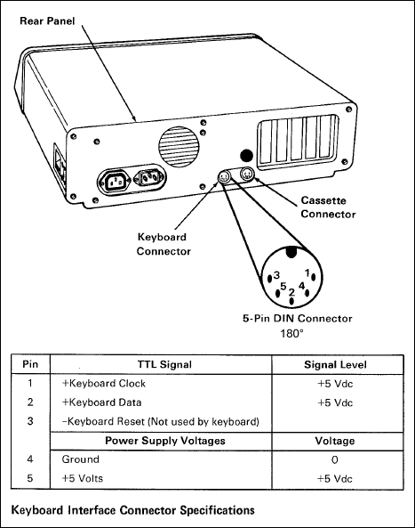
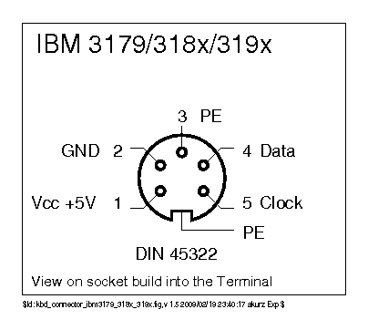
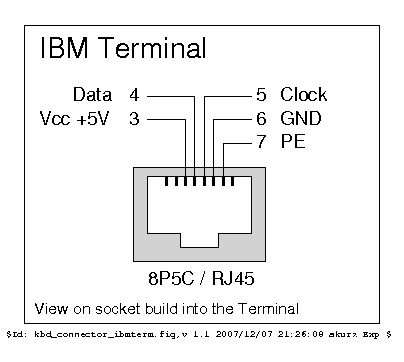
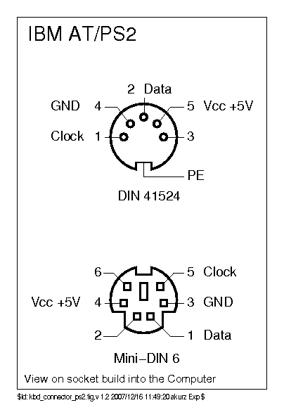
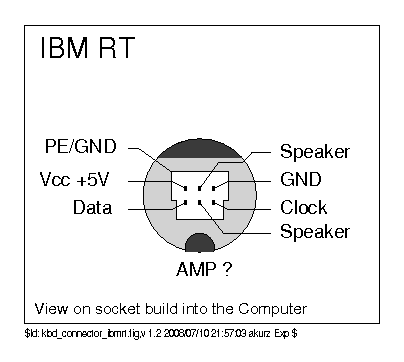
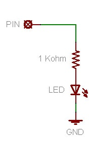
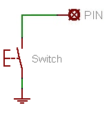
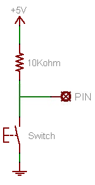
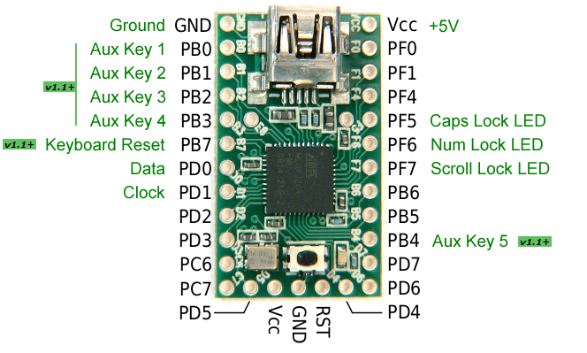
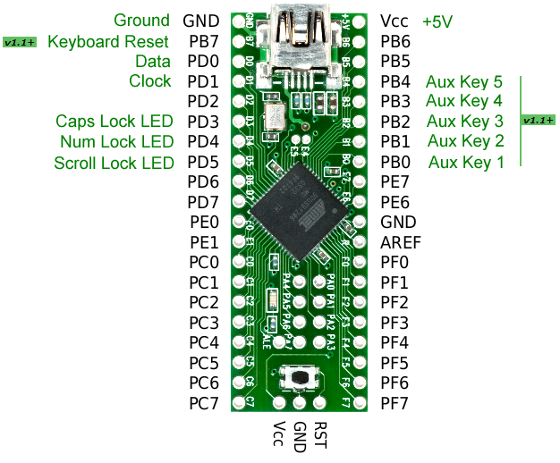

Essential items:
Optional items, as desired:
You could, of course, mount the Teensy inside your keyboard and not even need a connector or a box!
See the firmware section for details of supported AVR processors and breakout boards.
| Connector | Breakout board |
|---|---|
| GND | GND |
| Vcc/+5V | VCC |
| Data | PD0 |
| Clock | PD1 |
| Keyboard Reset v1.1+ | PB7 |
See PJRC for Teensy pinouts, or the documentation that came with your chosen breakout board.
'Keyboard Reset' is only required for certain PC/XT-like keyboards, such as the Leading Edge DC-2014.
I wired mine to a PS/2 socket, and then use adapters to connect the others.
kbdbabel has masses of connector info. So much, that it can be hard to find the one you want!
So I've included the most common connectors used with this converter here.
Note that all the connectors are shown looking into the socket.
PC/XT keyboards use a 5 pin, 180 degree, DIN connector. It is the same as the AT connector shown later, except that pin 3 is defined as a reset signal...

(from the IBM PC Technical Reference Manual, with correction!)
Terminal keyboards usually have a 5 pin, 270 degree, DIN connector...

...or sometimes this 8P5C connector...

PC, XT and AT keyboards use the same 5 pin, 180 degree, DIN connector and pinout,
while PS/2 keyboards use a 6 pin mini-DIN connector...

RT keyboards have this connector...

In nearly all cases, these resistors are not needed.
But, if the keyboard has a very long cable (3m+), I recommend adding two pull-up resistors of 1Kohm - one between Clock and +5V, the other between Data and +5V. These can really help to clean up a dirty signal (see here).
Optionally, lock LEDs can be wired up. Useful if your keyboard doesn't have them!
The outputs are active high (each pin puts out +5V when it wants to light the LED).
A resistor is needed inline with each LED. (The value needed depends on the type of LED,
1Kohm is a good starting point for modern high-brightness types).
Here's an example circuit for hooking up an LED, taken from
ladyada.net:

They also have a more in-depth tutorial.
The pins used differ between CPUs.
ATMEGA32U4 (Teensy 2.0) and ATMEGA16U4:
| LED | CPU Pin |
|---|---|
| CapsLock | PF5 |
| NumLock | PF6 |
| ScrollLock | PF7 |
AT90USB1286 (Teensy++ 2.0) and AT90USB646:
| LED | CPU Pin |
|---|---|
| CapsLock | PD3 |
| NumLock | PD4 |
| ScrollLock | PD5 |
Five inputs are provided for auxiliary keys, buttons, or footswitches, which generate codes that can be remapped in your config:
| Auxiliary Key | Code | CPU Pin |
|---|---|---|
| 1 | AUX1 | PB0 |
| 2 | AUX2 | PB1 |
| 3 | AUX3 | PB2 |
| 4 | AUX4 | PB3 |
| 5 | AUX5 | PB4 |
Inputs cause key presses when grounded, so you can simply connect the switch between the pin and ground:

Inputs have the internal pull-up enabled, so an external resistor won't be required in most cases. But it might be necessary to use one, for example with footswitches where the wires are long. Here's how you would wire one up:

The GND and Vcc pins at the end of the Teensy can be used instead of the marked GND and Vcc, if you prefer. Or you might choose to wire the connector to one GND and the LEDs using the other.
Of course, not all connections are required! The minimum and still fairly typical setup would be to connect just Ground, +5V, Data and Clock to the connector (or keyboard).

